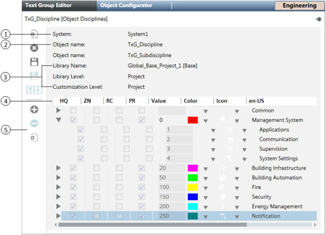

Text Group Editor
For procedures or workflows, see the step-by-step section.
Overview of Text Group Editor
Text Group Editor allows you to manage Text Groups that are used throughout the system. With appropriate permissions, you can create, view, customize, edit, or delete text groups.
For example, you can create a text group to represent the various states of a supply fan in your system. In the Text Group editor’s text table, you might enter the following values and descriptions for those values:
Value | en-US |
0 | Off |
1 | Slow |
2 | Fast |
In this example, the values represent the integer values that the system might assign to the present value property of the supply fan data point. After you create the text group, you can then assign it to this property and others like it using the Functions Editor. Other components of the system—such as Graphics Viewer in the Primary pane, and Operation and Extended Operation tabs in the Contextual pane—will use this information to display the fan’s present value in the descriptive text you have chosen for the supported languages.
Support for Customization
Basic system libraries (such as, L1-Headquarter > Global > Base) are provided with your installation. You can import, create, or edit additional libraries containing text groups. If those text groups are at a level that is higher than your current customization level, they are not editable until you customize them. Customizing means that the text group is copied, for example, from the L1-Headquarter level to the L4-Project level, where the text group can then be modified and saved.
This icon indicates that the text group is active and therefore customizable.
This icon indicates that the text group is inactive, which means that either you do not have rights to customize the text group or that it has already been customized at your current customization level.
Support for Multiple Languages
The Text Group editor supports entry of translated text for the system’s supported languages. For example, if your project has been defined to support three languages—English, German, and French—you might see the following language codes and the textual representation of the values 0, 1, and 2 in the text table:
Value | en-US | de-DE | fr-CA |
0 | Off | Ausschalten | Éteindre |
1 | Slow | Langsam | Lent |
2 | Fast | Schnell | Rapide |
Support for Nested Text Groups
The Text Group editor also supports nested text groups so that you can view disciplines and their sub-disciplines. In the following example of a text list, the Building Automation discipline is selected and expanded to show the three subdisciplines related to it.
Value | Color | Icon | en-US |
50 | - | - | Building Automation |
51 | - | - | HVAC |
52 | - | - | Lighting |
53 | - | - | Blind Control |
Color and Icon Assignments
For many entries in the text table, you can optionally assign colors and icons that can then be used when displaying texts or their related states graphically. For example, the ON state of a fan may be represented textually by displaying the ON text in a given language, or graphically by displaying a color—green, for instance. Additionally, an icon associated with the ON state may also display. You can also copy and paste colors and icons from one row in the text table to another.
Text Group Editor Workspace

Item | Description |
1 | System |
2 | Object name |
3 | Library Name Library Level Customization Level |
4 | Text List |
5 | Toolbar |

When you save a new Text Group, it is saved to the library at the current Customization Level. When you use the Save As feature, the text group is saved to the library at the current Customization Level or lower. If customization has not been enabled for the selected library at the current Customization Level, the Add new group and Save As buttons are not available.
If the Text Group is at a library level above the current Customization Level, the Delete group button is not available.